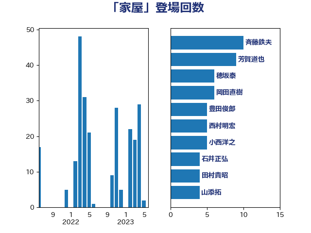

単語「家屋」

| 斉藤鉄夫 | 公明党 | 10 回 |
| 芳賀道也 | 国民民主党 | 9 回 |
| 穂坂泰 | 自由民主党 | 6 回 |
| 岡田直樹 | 自由民主党 | 6 回 |
| 豊田俊郎 | 自由民主党 | 5 回 |
| 西村明宏 | 自由民主党 | 5 回 |
| 小西洋之 | 立憲民主党 | 5 回 |
| 石井正弘 | 自由民主党 | 4 回 |
| 田村貴昭 | 日本共産党 | 4 回 |
| 山添拓 | 日本共産党 | 4 回 |
| 嘉田由紀子 | 無所属 | 4 回 |
| 鈴木俊一 | 自由民主党 | 3 回 |
| 足立敏之 | 自由民主党 | 3 回 |
| 紙智子 | 日本共産党 | 3 回 |
| 渡辺博道 | 自由民主党 | 3 回 |
| 山口壯 | 自由民主党 | 3 回 |
| 高見康裕 | 自由民主党 | 2 回 |
| 阿部知子 | 立憲民主党 | 2 回 |
| 野田国義 | 立憲民主党 | 2 回 |
| 谷公一 | 自由民主党 | 2 回 |
| 西岡秀子 | 国民民主党 | 2 回 |
| 舟山康江 | 国民民主党 | 2 回 |
| 石井苗子 | 日本維新の会 | 2 回 |
| 田畑裕明 | 自由民主党 | 2 回 |
| 田村智子 | 日本共産党 | 2 回 |
| 渡辺猛之 | 自由民主党 | 2 回 |
| 櫛渕万里 | れいわ新選組 | 2 回 |
| 本村伸子 | 日本共産党 | 2 回 |
| 早坂敦 | 日本維新の会 | 2 回 |
| 山田美樹 | 自由民主党 | 2 回 |
| 山本佐知子 | 自由民主党 | 2 回 |
| 守島正 | 日本維新の会 | 2 回 |
| 大口善徳 | 公明党 | 2 回 |
| 堤かなめ | 立憲民主党 | 2 回 |
| 務台俊介 | 自由民主党 | 2 回 |
| 伊波洋一 | 無所属 | 2 回 |
| 井上哲士 | 日本共産党 | 2 回 |
| 高橋千鶴子 | 日本共産党 | 1 回 |
| 阿部弘樹 | 日本維新の会 | 1 回 |
| 長峯誠 | 自由民主党 | 1 回 |
| 長友慎治 | 国民民主党 | 1 回 |
| 金子恵美 | 立憲民主党 | 1 回 |
| 金子恭之 | 自由民主党 | 1 回 |
| 金子俊平 | 自由民主党 | 1 回 |
| 谷川とむ | 自由民主党 | 1 回 |
| 葉梨康弘 | 自由民主党 | 1 回 |
| 萩生田光一 | 自由民主党 | 1 回 |
| 菅家一郎 | 自由民主党 | 1 回 |
| 若松謙維 | 公明党 | 1 回 |
| 竹内真二 | 公明党 | 1 回 |
| 秋葉賢也 | 自由民主党 | 1 回 |
| 福田昭夫 | 立憲民主党 | 1 回 |
| 神津たけし | 立憲民主党 | 1 回 |
| 田所嘉徳 | 自由民主党 | 1 回 |
| 玄葉光一郎 | 立憲民主党 | 1 回 |
| 牧野たかお | 自由民主党 | 1 回 |
| 渡辺周 | 立憲民主党 | 1 回 |
| 清水貴之 | 日本維新の会 | 1 回 |
| 河西宏一 | 公明党 | 1 回 |
| 森屋隆 | 立憲民主党 | 1 回 |
| 梶山弘志 | 自由民主党 | 1 回 |
| 杉久武 | 公明党 | 1 回 |
| 山田勝彦 | 立憲民主党 | 1 回 |
| 大西英男 | 自由民主党 | 1 回 |
| 大塚耕平 | 国民民主党 | 1 回 |
| 城井崇 | 立憲民主党 | 1 回 |
| 吉良よし子 | 日本共産党 | 1 回 |
| 吉田宣弘 | 公明党 | 1 回 |
| 古川元久 | 国民民主党 | 1 回 |
| 加田裕之 | 自由民主党 | 1 回 |
| 伊藤孝江 | 公明党 | 1 回 |
| 伊藤孝恵 | 国民民主党 | 1 回 |
| 伊藤俊輔 | 立憲民主党 | 1 回 |
| 中川貴元 | 自由民主党 | 1 回 |
| 中山展宏 | 自由民主党 | 1 回 |
| 三上えり | 立憲民主党 | 1 回 |
| ながえ孝子 | 無所属 | 1 回 |
| こやり隆史 | 自由民主党 | 1 回 |